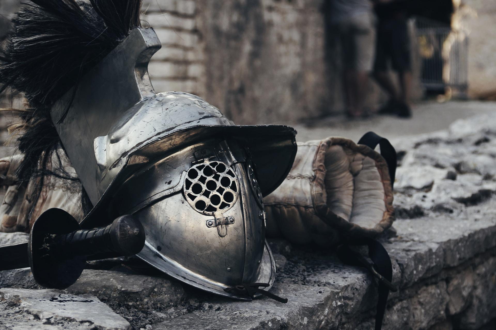

Novidades


Sobre Nós
O Armeiro é um comércio de artigos de tempos antigos, com ênfase na arte da guerra medieval e viking.
Com seus próprios forjadores e ferraria própria, O Armeiro produz equipamentos de alta qualidade fielmente representados com o máximo de precisão. Seja vestido num evento ou mesmo na decoração de um ambiente, nada produzido nesta forja sucumbe ao inimigo.
Saiba Mais

Espadas Medievais
Para guerreiros com a nobreza do Rei Arthur, e bravura de Aquiles.


Escudos e Armaduras
Até os decendentes de Perseu e Ajax precisam de proteção.

Machados
Parede de escudos, e rumo a Valhalla.


Jóias
Braceletes, anéis e pendentes. As runas protejem a todos.